Sledeći moduli su uključeni u standardnu(default) instalaciju Bodhi Linux-a:
Korisni Programi (Utilities) | ||
| Modul | Gedžet | Opis |
| Pozadinsko Osvetljenje (Backlight) | 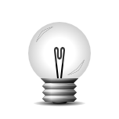 | Gedžet kontrole klizača Pozadinskog Osveteljenja |
| Sat (Clock) | Analogni sat po standardu(by default), ali takođe ima i digitalnu alternativu. | |
| Aktivator (Engage) | Dok koji podržava kombinovanje(compositing) i ne kombinovanje (no compositing) za Enlightenment radnu površinu | |
| IBar | Ikonski pokretač programa (dok) | |
| IBox | Dom za vaše programe sa ikonicom | |
| Pejdžer (Pager) |  | Gedžet koji vam omogućava da vidite vaše Virtualne Radne Površine i prozore koji se nalaze u njima |
| Snimak (Shot) | 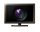 | Jednostavan snimak ekrana+sačuvaj/uploaduj Modul sa unosom Glavnog Menija (Main Menu entry) |
| Start | Ekvivalent E17-ovom "Start" dugmetu | |
| Sistem Podmetač (Systray) | Sistem podmetač na kome stoje ikonice za programe kao što su Skype, Pidgin, Kopete i drugi | |
| Poslovi (Tasks) | 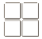 | Gedžet koji vam omogućava promenu između poslova |
| iTask | On će držati sve vaše otvorene programe za brzu promenu između istih | |
| Prognoze Vremena (Forecasts) | Vremenske prognoze za vašu radnu površinu | |
| Tastatura (Keyboard) | 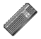 | Konfigurisanje izgleda tastature i menjač za druge jezike |
Sistem (System) | ||
| Baterija (Battery) | 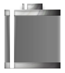 | Gedžet koji vam omogućava da vidite status baterije |
| Frekvencija CPU (CPUfreq) | 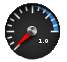 | Gedžet za praćenje i promenu frekvencije CPU |
| Mikser (Mixer) | Modul koji vam obezbeđuje mikser za promenu jačine zvuka | |
| Temperatura (Temperature) | Nadgledanje temperature | |
| DBus Ekstenzija (DBus Extension) | ||
Izgled (Look) | ||
| Kombinovanje (Composite) | Enlightenment menadžer kombinovanja (Enlightenment Composite manager) | |
| Pad Senke (DropShadow) | Modul za dodavanje pad senke (dropshadow) za programe | |
| Postepeno smanjivanje prozora (Scale Windows) | Postepeno smanjivanje prozora da bi ih videli sve jedne pored drugih | |
Fajlovi (Files) | ||
| EFM (Starter) | Enlightenment-ov ugrađeni fajl menadžer | |
| Informacije o Operacijama EFM-a (EFM Operation Info) | Može se postaviti samo na radnu površinu | |
| Mesta, Položaji (Places) | 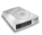 | Prikazuje status vaših diskova, postavljanje (mount) i uklanjanje (unmount/eject) istih |
Pokretač (Launcher) | ||
| Sve starter (Everything (starter)) | Komandni modul koji obezbeđuje dijalog za pokretanja programa | |
| Brz Pristup (Quickaccess) | Enlightenment-ov pokretač Brzog Pristupa (Quickaccess Launcher) | |
Jezgro (Core) | ||
| Bodhi Zatvori (Bodhi Close) | Gedžet koji obezbeđuje brz pristup za zatvaranje trenutno aktivnog programa | |
| Gedžeti (Gadgets) | Modul za manipulaciju Gedžetima na radnoj površini | |
| Obaveštavanje (Notification) | Alternativa za samostartujući program za obaveštavanje (notification-daemon); Iskoči ako se događaj desi | |
| Panel za Podešavanja (Settings Panel) | Opšti Enlightenment Panel za Podešavanja | |
| Kontrola Sistema (System Controls) | Ovaj modul obezbeđuje jedinstveni iskačući dijalog za sve akcije sistema u Enlightenment-u | |
| Popločavanje (Tiling) | Pločasto pozicionira/preuređuje dimenzije vaših prozora | |
| Menjač Prozora (Window Switcher) | Modul za prikaz liste klijent programa koji su trenutno u upotrebi | |
Mobilni (Mobile) | ||
| Elfe | Pokretač za Tablet profil | |
| Osvetljenje Bluetooth (Illume-Bluetooth) | 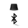 | Kontrola Bluetooth uređaja u Osvetljenju (Illume) |
| Osvetljenje-Dom (Illume-Home) | Standardni(default) dom pokretač za osvetljenje(illume). Nije ubačen po standardu(by default) u Bodhi Tablet profilu. | |
| Osvetljenje-Dom-Prekidač (Illume-Home-Toggle) | Dugme za povratak na dom ekran osvetljenja (home screen of illume) | |
| Osvetljenje-Indikator (Illume-Indicator) | Gornji panel za osvetljenje (the top panel of illume). | |
| Osvetljenje-Tastatura (Illume-Keyboard) | 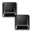 | Tastatura na ekranu. |
| Osvetljenje-Tastatura-Prekidač (Illume-Keyboard-Toggle) | Dugme za pozivanje tastature na ekran. | |
| Osvetljenje-Mod-Prekidač (Illume-Mode-Toggle) | Gedžet za postavku osvetljenja radne površine u podeljen-mod (A gadget to put the Illume desktop into split-mode). Nije ubačen po standardu(by default) u Bodhi Tablet profilu. | |
| Osvetljenje-Meki Taster (Illume-Softkey) | Donja ploča (bar) za Osvetljenje (Illume). Nije ubačen po standardu(by default) u Bodhi Tablet profilu. | |
| Osvetljenje2 (Illume2) | Modul koji je zadužen za skidanje ivica prozora i maksimiziranje svih prozora. | |
Podešavanja (Settings) | ||
| Programi (Applications) | Omogućava konfigurisanje Ibar, Restart, i Startup Programa. | |
| Dijalozi (Dialogs) | Konfigurisanje osobina standardnog (default) dijaloga. | |
| Vezivanja Ivica (Edge Bindings) | Ovde možete konfigurisati vaša vezivanja ivica. | |
| Ulazna Kontrola Podešavanja (Input Control Settings) | 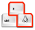 | Kontrola Podešavanja za Taster, Miš i Dugme (Key, Mouse and Button Control settings) |
| Interakcija (Interaction) | Konfigurisanje ulaza za Miš i Dodir (Configure Mouse and Touch input). | |
| Jezik (Language) | Koristi se za podešavanje standardnog (default) jezika. | |
| Podešavanja Menija (Menu Settings) | 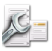 | Konfigurisanje ponašanja menija. |
| Performanse (Performance) | Služi za konfigurisanje određenih performansi srodnih stavki kao što su frejmovi i keš podešavanja. | |
| Ekran (Screen) | Koristi se za konfigurisanje vašeg ekrana. | |
| Pretraživanje Direktorijuma (Search Directories) | Navodi E17 puteve pretrage i standardne (default) direktorijume. | |
| Podešavanja - Postavka Ekrana (Settings - Screen Setup) | Koristi se za konfigurisanje rezolucije vašeg ekrana i postavku više monitora. | |
| Police (Shelves) | Dijalog za konfigurisanje Polica. | |
| Tema (Theme) | Koristi se za konfigurisanje podešavanja teme. | |
| Manipulacija Prozora (Window Manipulation) | Konfiguriše prozor politike za podizanje, otpor i maksimiziranje. | |
| Pamćenja Prozora (Window Remembers) | Brisanje postojećih pamćenja prozora. | |
| Sledeći Moduli su dostupni za instalaciju iz Bodhi Linux repozitorija: | ||
| Taskbar | Gedžet koji obezbeđuje taskbar koji prikazuje aktivne programe | |
| TSat (TClock) | Gedžet za digitalni sat | |
| DiskIO | Modul koji prikazuje aktivnosti na disku | |
| Memorija (Mem) | 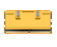 | Ažuriranje memorije na vašoj E17 radnoj površini u realnom vremenu |
| Vesti (News) | RSS snabdevanje za vašu radnu površinu | |
| Mesec (Moon) | 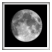 | Pratite kretanje mesečevih ciklusa na vašoj radnoj površini |
| Pošta (Mail) | Proveravajte vašu elektronsku poštu na Enlightenment radnoj površini | |
| Procesor (CPU) | Modul za merenje upotrebe procesora (CPU) | |
| Sneg (Snow) | Savršen za zimsko vreme. Donosi sneg i zabavu na vašu radnu površinu. | |
| Plamen (Flame) | Postavite vatru na vašu radnu površinu | |
| Kiša (Rain) | Oblaci i kiša za vašu radnu površinu | |
| Foto (Photo) | 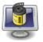 | Modul za prikaz slajdova (slideshow) na vašu radnu površinu |
| Prikaz slajdova (Slideshow) | 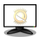 | Enlightenment modul za prikaz slajdova (slideshow). |
| Prikaz Deska (Deskshow) | 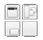 | Gedžet koji vam omogućava da brzo vidite radnu površinu. |
| Sve-Pratilac (Everything-Tracker) | Pretraživanje fajlova sa pratiocem(0.8), koji takođe ima i muzički pregledač. | |
| Sve-MPRIS (Everything-MPRIS) | Manipulacija plejlistom sa muzičkim plejerima koji podržavaju MPRIS (Amarok, Audacious, xmms2, ...) | |
| Sve-Mesta (Everything-Places) | Modul za proširenje Pokreni Sve (Run Everything) | |
| Sve-Pretraživanje Mreže (Everything-Websearch) | Nađite stvari na Wikipediji, koristite GoogleTMsugestije , prevedite tekst, ili pretražite Youtube | |
| Sve-Tapeta (Everything-Wallpaper) | Modul za proširenje Pokreni Sve (Run Everything) | |
| Sve-Pidgin (Everything-Pidgin) | Otvorite prozor za ćaskanje ili pošaljite fajlove drugarima sa Pidgin-om. | |
{kind=link}
{kind=link}
{kind=link}
{kind=link}
{kind=link}
{kind=link}
{kind=link}
{kind=link}
{kind=link}
{kind=link}
{kind=link}
{kind=link}
{kind=link}
{kind=link}
{kind=link}
{kind=link}
{kind=link}
{kind=link}
{kind=link}
{kind=link}
{kind=link}
{kind=link}
{kind=link}
{kind=link}
{kind=link}
{kind=link}
{kind=link}
{kind=link}
{kind=link}
{kind=link}
{kind=link}
{kind=link}
{kind=link}
{kind=link}
{kind=link}
{kind=link}
{kind=link}
{kind=link}
{kind=link}
{kind=link}
{kind=link}
{kind=link}
{kind=link}
{kind=link}
{kind=link}
{kind=link}
{kind=link}
{kind=link}
{kind=link}
{kind=link}
{kind=link}
{kind=link}
{kind=link}
{kind=link}
{kind=link}
{kind=link}
{kind=link}
{kind=link}
{kind=link}
{kind=link}
{kind=link}
{kind=link}